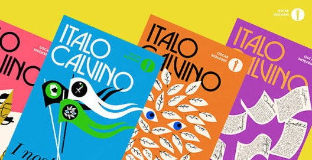
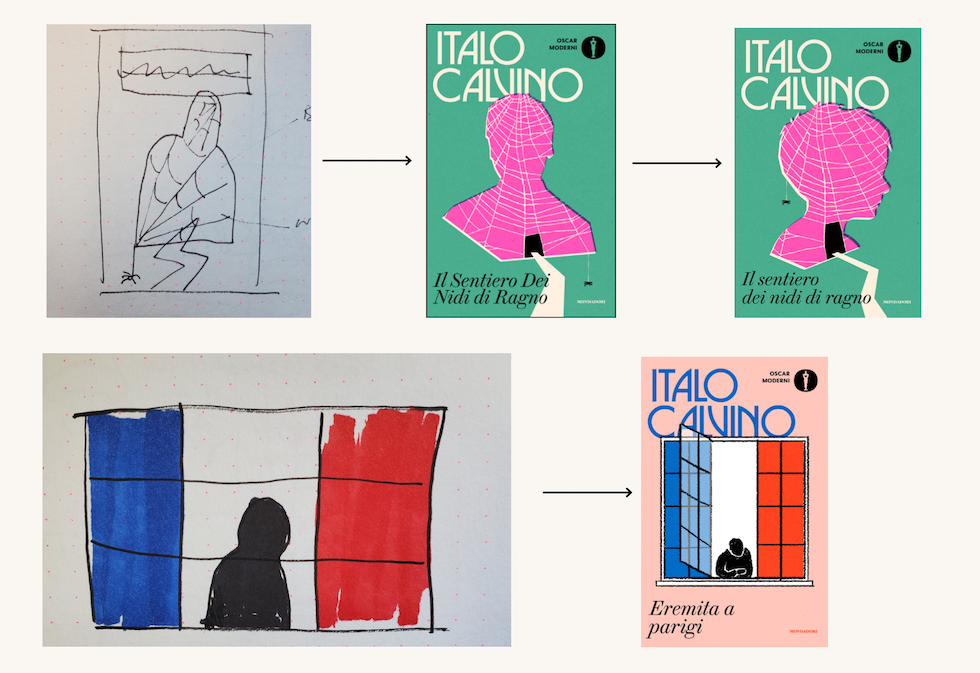
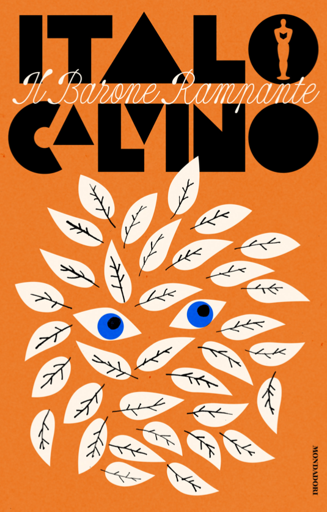
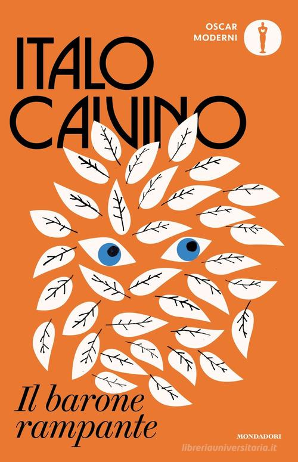

JACK SMYTH
E LA NUOVA FACCIA DI CALVINO
CALVINO E LA NUOVA UNIFORM EDITION
In occasione del centenario della nascita di Italo Calvino, Mondadori ha ripubblicato tutti i suoi libri in una nuova “uniform edition”, con 33 copertine caratterizzate dallo stesso stile grafico e da illustrazioni originali ispirate alle opere. Per scegliere il progetto, Mondadori ha organizzato una gara coinvolgendo quattro designer stranieri, chiedendo loro di proporre copertine innovative, eleganti e capaci di parlare anche a un pubblico giovane.


IL GRAFICO VINCITORE, JACK SMYTH
A vincere la gara è stato l’irlandese Jack Smyth, già lettore di Calvino. Per il progetto ha riletto alcuni libri che conosceva e ne ha letti altri, realizzando inizialmente sette copertine, invece delle tre richieste, per dimostrare che il suo stile poteva adattarsi alla grande varietà delle opere di Calvino. Il suo progetto è stato scelto da Mondadori e poi modificato insieme all’editore fino ad arrivare alle copertine definitive.
IL BARONE RAMPANTE
La copertina de “Il barone rampante” è stata la prima illustrazione realizzata da Jack Smyth. Gli occhi nascosti tra le foglie sono nati da un’intuizione avuta mentre leggeva il romanzo e richiamano la scelta del protagonista di vivere sugli alberi. Anche la tipografia è stata modificata durante il lavoro con Mondadori. Inizialmente i titoli utilizzavano un carattere manuale e morbido, ma questa soluzione risultava poco leggibile. Smyth ha quindi scelto il Brunel Deck di Commercial Type per il titolo, un carattere con grazie dall’aspetto più classico, adatto a un autore ormai considerato un classico.
-

Prima versione
-

Versione definitiva